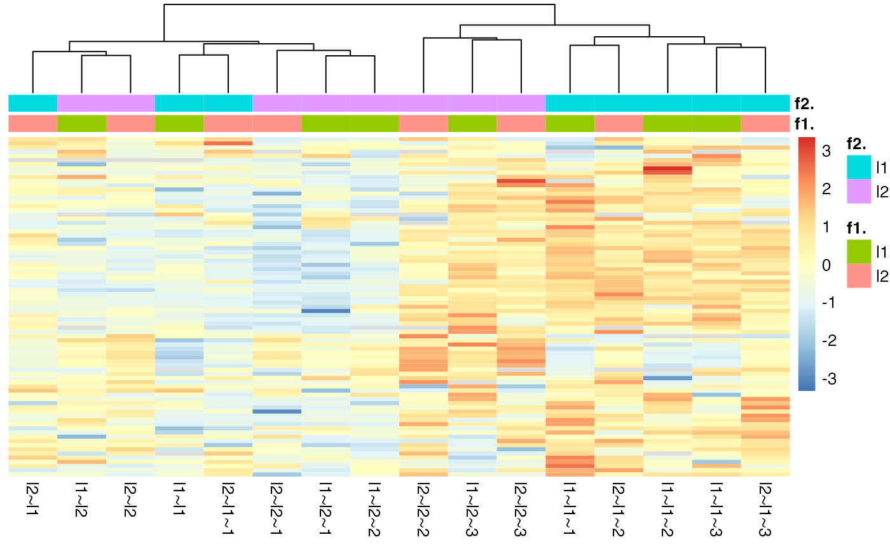
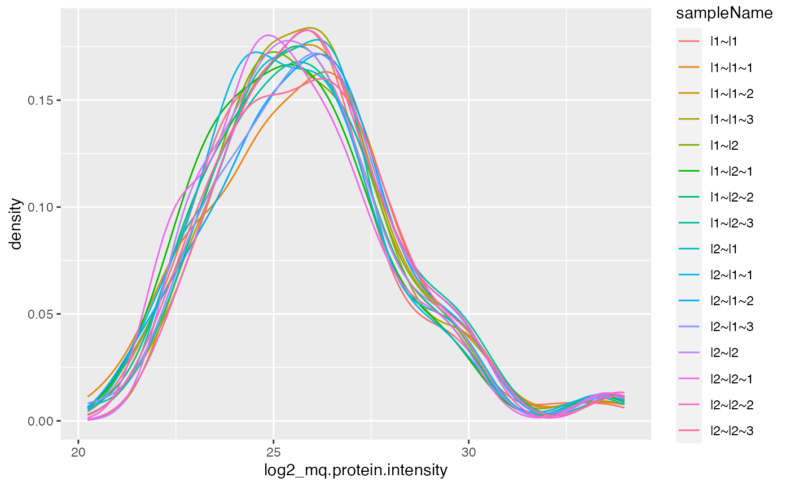
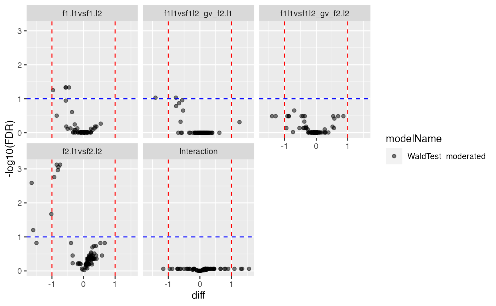
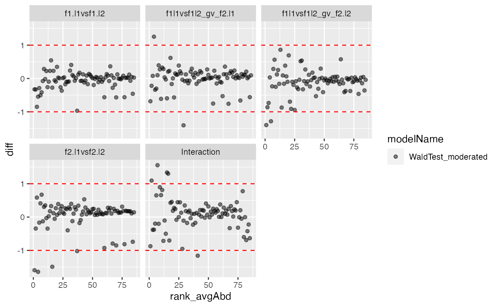
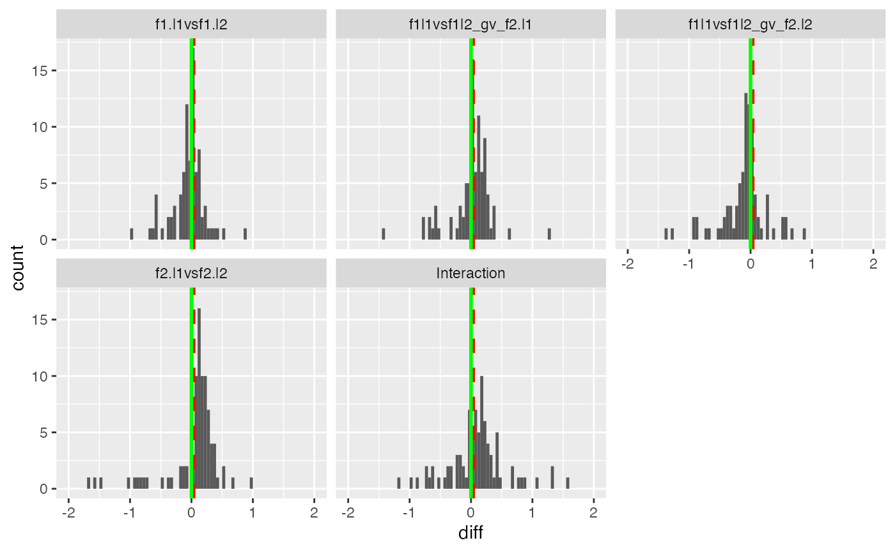
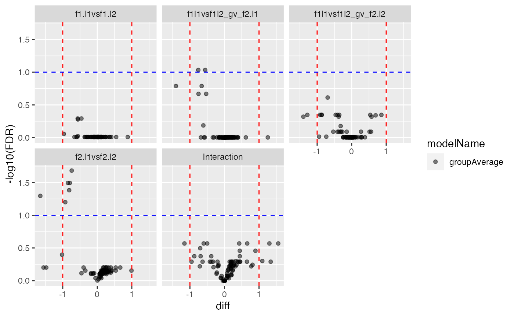
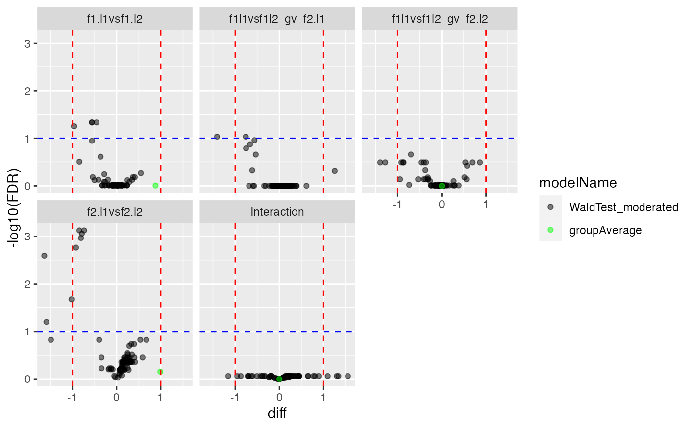

Modelling with Interactions.
Witold Wolski
21 September, 2022
Source:../vignettes/ModelWithInteractions.Rmd
ModelWithInteractions.Rmd
a <- c(a = 3,b = 4.5, c = 6, d = 7.5, e = 9)
f1 <- list(l1 = 3,l2 = 4.5)
f2 <- list(l1 = 0, l2 = 3)
a = f1$l1 + f2$l1
b = f1$l2 + f2$l1
c = f1$l1 + f2$l2
d = f1$l2 + f2$l2
c(a,b,c,d)## [1] 3.0 4.5 6.0 7.5
datadir <- file.path(find.package("prolfqua") , "samples/maxquant_txt")
inputMQfile <- file.path(datadir, "tiny2.zip")
inputAnnotation <- file.path(datadir, "annotation_Ionstar2018_PXD003881.xlsx")
startdata <- prolfqua::tidyMQ_ProteinGroups(inputMQfile)Read the sample annotation. The sample annotation must contain the
raw.file name and the explanatory variables of your
experiment, e.g. treatment, timepoint, genetic background, or other
factors which you would like to check for confounding.
## # A tibble: 6 × 4
## raw.file run_ID date sample
## <chr> <chr> <chr> <chr>
## 1 b03_02_150304_human_ecoli_b_3ul_3um_column_95_hcd_ot_2hrs… 02 1503… b
## 2 b03_03_150304_human_ecoli_c_3ul_3um_column_95_hcd_ot_2hrs… 03 1503… c
## 3 b03_04_150304_human_ecoli_d_3ul_3um_column_95_hcd_ot_2hrs… 04 1503… d
## 4 b03_05_150304_human_ecoli_e_3ul_3um_column_95_hcd_ot_2hrs… 05 1503… e
## 5 b03_06_150304_human_ecoli_e_3ul_3um_column_95_hcd_ot_2hrs… 06 1503… e
## 6 b03_07_150304_human_ecoli_d_3ul_3um_column_95_hcd_ot_2hrs… 07 1503… d
annotation <- annotation |> dplyr::filter(sample != "e")
annotation <- annotation |>
dplyr::mutate(f1 = dplyr::case_when(sample %in% c("a","c") ~ "l1", TRUE ~ "l2"),
f2 = dplyr::case_when(sample %in% c("a","b") ~ "l1", TRUE ~ "l2")) |>
dplyr::arrange(sample)Merge the annotation with quantitative data using
inner_join joining by raw.file.
startdata <- dplyr::inner_join(annotation, startdata, by = "raw.file")We remove all proteins identified only by a single peptide.
startdata <- dplyr::filter(startdata, nr.peptides > 1)Then you need to tell prolfqua which columns in
the data frame contain what information. You do it using the
AnalysisTableAnnotation class.
atable <- prolfqua::AnalysisTableAnnotation$new()The AnalysisTableAnnotation has the following fields
that need to be populated:
- fileName
- hierarchy
- factors
- workingIntensity
, and we will discuss in more detail next.
The fileName is the column with the raw file names,
however for labelled TMT experiments, it can be used to hold the name of
the TMT channel.
atable$fileName = "raw.file"The hierarchy field describes the structure of the MS
data e.g,
- protein
- peptides
- modified peptides
- precursor
In case of the MQ proteinGroups file we have data on protein level.
atable$hierarchy[["protein_Id"]] <- c("proteinID")In addition you need to describe the factors of the
analysis, i.e, the column containing the explanatory variables.
atable$factors[["f1."]] = "f1"
atable$factors[["f2."]] = "f2"We also need to specify the column containing the protein abundances.
atable$setWorkIntensity("mq.protein.intensity")Finally we create the AnalysisConfiguration which needs
the AnalysisTableAnnotation we just created and the
AnalysisParameters.
config <- prolfqua::AnalysisConfiguration$new(atable)
adata <- prolfqua::setup_analysis(startdata, config)Create the LFQData class instance and remove zeros from
data (MaxQuant encodes missing values with zero).
lfqdata <- prolfqua::LFQData$new(adata, config)
lfqdata$remove_small_intensities()
lfqdata$factors()## # A tibble: 16 × 4
## raw.file sampl…¹ f1. f2.
## <chr> <chr> <chr> <chr>
## 1 b03_10_150304_human_ecoli_a_3ul_3um_column_95_hcd_ot_2hr… l1~l1 l1 l1
## 2 b03_11_150304_human_ecoli_a_3ul_3um_column_95_hcd_ot_2hr… l1~l1~1 l1 l1
## 3 b03_20_150304_human_ecoli_a_3ul_3um_column_95_hcd_ot_2hr… l1~l1~2 l1 l1
## 4 b03_21_150304_human_ecoli_a_3ul_3um_column_95_hcd_ot_2hr… l1~l1~3 l1 l1
## 5 b03_03_150304_human_ecoli_c_3ul_3um_column_95_hcd_ot_2hr… l1~l2 l1 l2
## 6 b03_08_150304_human_ecoli_c_3ul_3um_column_95_hcd_ot_2hr… l1~l2~1 l1 l2
## 7 b03_13_150304_human_ecoli_c_3ul_3um_column_95_hcd_ot_2hr… l1~l2~2 l1 l2
## 8 b03_18_150304_human_ecoli_c_3ul_3um_column_95_hcd_ot_2hr… l1~l2~3 l1 l2
## 9 b03_02_150304_human_ecoli_b_3ul_3um_column_95_hcd_ot_2hr… l2~l1 l2 l1
## 10 b03_09_150304_human_ecoli_b_3ul_3um_column_95_hcd_ot_2hr… l2~l1~1 l2 l1
## 11 b03_12_150304_human_ecoli_b_3ul_3um_column_95_hcd_ot_2hr… l2~l1~2 l2 l1
## 12 b03_19_150304_human_ecoli_b_3ul_3um_column_95_hcd_ot_2hr… l2~l1~3 l2 l1
## 13 b03_04_150304_human_ecoli_d_3ul_3um_column_95_hcd_ot_2hr… l2~l2 l2 l2
## 14 b03_07_150304_human_ecoli_d_3ul_3um_column_95_hcd_ot_2hr… l2~l2~1 l2 l2
## 15 b03_14_150304_human_ecoli_d_3ul_3um_column_95_hcd_ot_2hr… l2~l2~2 l2 l2
## 16 b03_17_150304_human_ecoli_d_3ul_3um_column_95_hcd_ot_2hr… l2~l2~3 l2 l2
## # … with abbreviated variable name ¹sampleName
hm <- lfqdata$get_Plotter()$heatmap()
hm
tr <- lfqdata$get_Transformer()
lfqTrans <- tr$log2()$lfq
lfqTrans$get_Plotter()$intensity_distribution_density()
lfqTrans$response()## [1] "log2_mq.protein.intensity"
lfqTrans$rename_response("abundance")Model Fitting
formula_Batches <-
prolfqua::strategy_lm("abundance ~ f1. * f2. ")
# specify model definition
modelName <- "Model"
DEBUG <- TRUE
Contrasts <- c("f1.l1vsf1.l2" = "f1.l1 - f1.l2",
"f2.l1vsf2.l2" = "f2.l1 - f2.l2",
"f1l1vsf1l2_gv_f2.l1" = "`f1.l1:f2.l1` - `f1.l2:f2.l1`",
"f1l1vsf1l2_gv_f2.l2" = "`f1.l1:f2.l2` - `f1.l2:f2.l2`",
"Interaction" = "`f1l1vsf1l2_gv_f2.l1` - `f1l1vsf1l2_gv_f2.l2`"
)
mod <- prolfqua::build_model(
lfqTrans,
formula_Batches)
mod$anova_histogram(what = "FDR.Pr..F.")## $plotp-value distributions for ANOVA analysis.
##
## $name
## [1] "Anova_p.values_Model.pdf"ANOVA
Examine proteins with a significant interaction between the two factors treatment and batch.
ANOVA <- mod$get_anova()
ANOVA |> dplyr::filter(factor == "f1.:f2.") |> dplyr::arrange(FDR.Pr..F.) |> head(5)## # A tibble: 5 × 10
## protein_Id isSin…¹ nrcoef factor Df Sum.Sq Mean.Sq F.value Pr..F. FDR.P…²
## <chr> <lgl> <int> <chr> <int> <dbl> <dbl> <dbl> <dbl> <dbl>
## 1 sp|O00401|W… FALSE 4 f1.:f… 1 0.0755 0.0755 0.710 0.416 0.870
## 2 sp|O43251|R… FALSE 4 f1.:f… 1 0.362 0.362 3.70 0.0783 0.870
## 3 sp|O75962|T… FALSE 4 f1.:f… 1 0.0335 0.0335 0.770 0.397 0.870
## 4 sp|P02925|R… FALSE 4 f1.:f… 1 0.0405 0.0405 0.976 0.343 0.870
## 5 sp|P02931|O… FALSE 4 f1.:f… 1 0.0388 0.0388 0.457 0.512 0.870
## # … with abbreviated variable names ¹isSingular, ²FDR.Pr..F.
ANOVA$factor |> unique()## [1] "f1." "f2." "f1.:f2."
protIntSig <- ANOVA |> dplyr::filter(factor == "f1.") |>
dplyr::filter(FDR.Pr..F. < 0.25)
protInt <- lfqTrans$get_copy()
protInt$data <- protInt$data[protInt$data$protein_Id %in% protIntSig$protein_Id,]
ggpubr::ggarrange(plotlist = protInt$get_Plotter()$boxplots()$boxplot)
Proteins with FDR < 0.5 for condition batch interaction in ANOVA.
Compute contrasts
contr <- prolfqua::ContrastsModerated$new(prolfqua::Contrasts$new(mod, Contrasts))
#contr$get_contrasts_sides()
contrdf <- contr$get_contrasts()
plotter <- contr$get_Plotter()
plotter$volcano()## $FDR
plotter$ma_plot()
Annalyse contrasts with missing data imputation
lfqTrans$config$table$factorDepth <- 2
#ContrastsSimpleImpute$debug("get_contrasts")
contrSimple <- prolfqua::ContrastsSimpleImpute$new(lfqdata = lfqTrans, Contrasts)
contrdfSimple <- contrSimple$get_contrasts()
#na.omit(contrdfSimple)
pl <- contrSimple$get_Plotter()
pl$histogram_diff()
pl$volcano()## $FDR
Merge nonimputed and imputed data.
dim(contr$get_contrasts())## [1] 430 13
dim(contrSimple$get_contrasts())## [1] 430 13
mergedContrasts <- prolfqua::addContrastResults(prefer = contr, add = contrSimple)$merged
cM <- mergedContrasts$get_Plotter()
plot <- cM$volcano()
plot$FDR